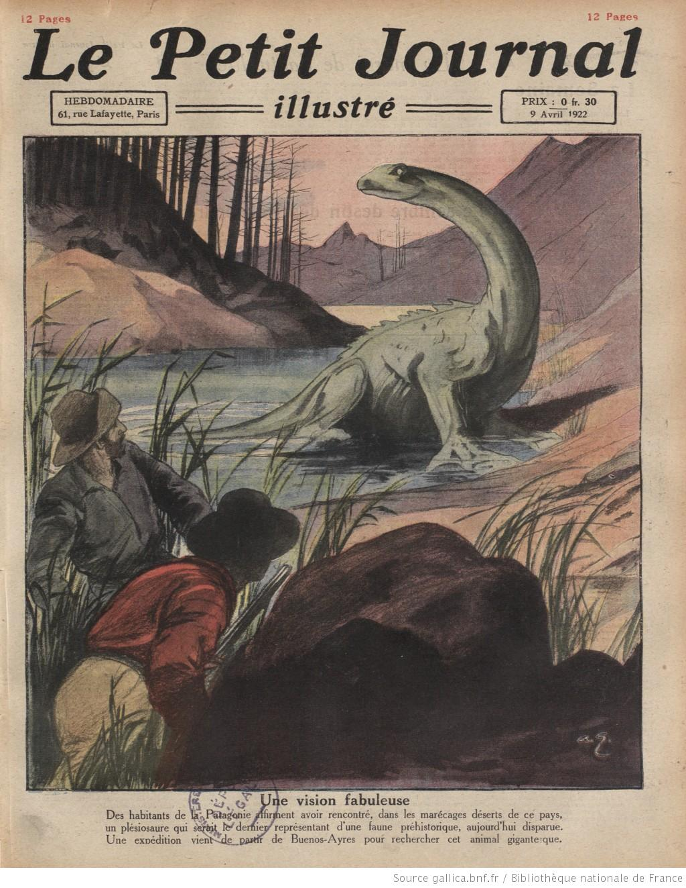

Couverture du Petit Journal Illustré le , relatant la découverte d'un
"plésiosaure" dans des marécages de Patagonie
Lors d'un orage, le centre de la petite ville de Doetinchem (Pays Bas)
est frappée par une gigantesque boule de feu "Een Vuurbol Gevallen", Het
Centrum (Pays Bas), 1922-08-10.
Dans les Alpes suisses, des milliers d'insectes étranges ressemblant à de grandes fourmis,
araignées et chenilles tombent sur les versants de plusieurs montagnes. Cela
se répète à chaque tempête de neige.